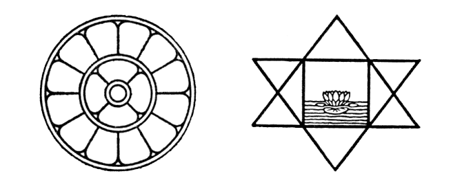
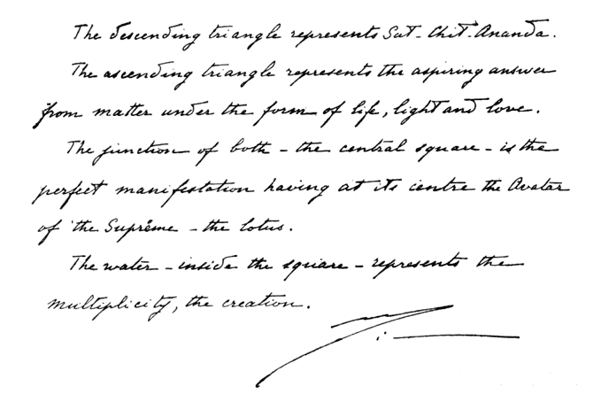
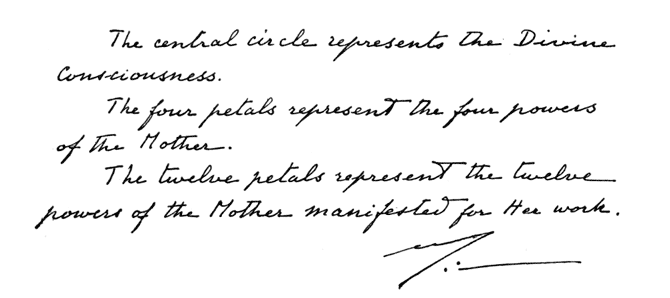

The descending triangle represents Sat-Chit-Ananda. The ascending triangle represents the aspiring answer from matter under the form of life, light and love.
The junction of both - the central square - is the perfect manifestation having at its center the Avatar of the supreme - the lotus
The water inside the square represents the multiplicity, the creation

The central circle represents the Divine consciousness
The four petals represent the four powers of the Mother
The twelve petals represent the twelve powers of the Mother manifested for Her work